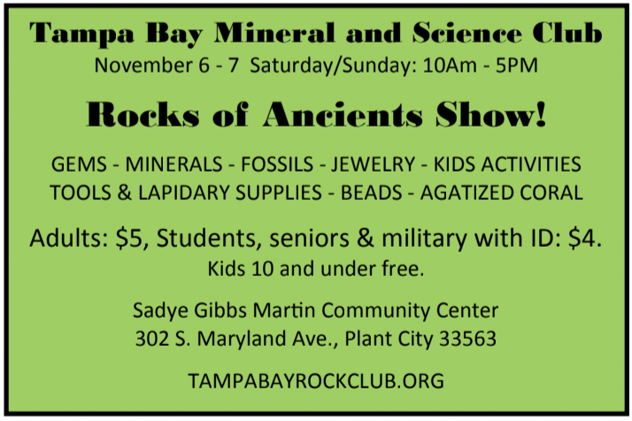
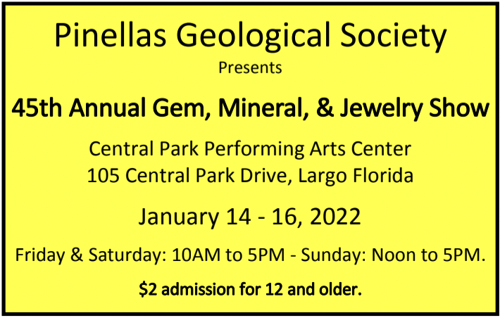

Announcements
Jan. 08, 2022 (Second Saturday!)Ice Age Florida in Story & Art with Dr. Bob Sinibaldi and Artist Hermann Trappman
7PM IN-PERSON CLUB MEETING at the USF Behavioral Science Room #103
There will NOT be a livestream.
 TBFC is excited to host the book release event for Ice Age Florida, In
Story and Art. Dr. Bob Sinibaldi and noted artist Hermann
Trappman collaborated on the perfect blend of story, and art, for a
new look at Florida’s Ice Age. Dr. Bob’s presentation will focus on
aspects of the book and the multiyear long effort to get the book in
print.
TBFC is excited to host the book release event for Ice Age Florida, In
Story and Art. Dr. Bob Sinibaldi and noted artist Hermann
Trappman collaborated on the perfect blend of story, and art, for a
new look at Florida’s Ice Age. Dr. Bob’s presentation will focus on
aspects of the book and the multiyear long effort to get the book in
print. In a day and age when fewer and fewer books are being published, the struggle to get this type of book published may have been as arduous as writing and illustrating the book. Join us as we celebrate the release of yet another great paleo literary work by Dr. Bob and artist Hermann Trappman.
Dr. Bob will have copies of the book available at the meeting at a significant price reduction.
Hope to see you all there in person!
Ice Age Florida, In Story and Art. Sinibaldi and Trappmenn, 2021. Dorrance Publishing Co., Pittsburgh, PA. 300 Pages, ISBN: 978-1- 6480-4356-7, Retail price: $70, eBook $10.
Tampa Bay Fossil Chronicles
Hopefully you’ve noticed that TBFC has stepped up its game with
the newsletter each month. In addition to all of our regular
contributors, we’ve added two new recurring articles this season. “In
Touch with Inverts” by Rob Carlson was added in September. Recently added, “Paleo Analysis” by Steve Vicari.
Each month Steve will be discussing interesting prehistoric fauna and how they
relate to extant species.
Please check out all of the articles in each
issue. Only TBFC members receive the Chronicles, we don’t post it online or on Facebook.
Be sure to renew your Fossil Permits!
 